5040C air conditioner box and components
- Path
- Descriptions > 50 AUXILIARY UNITS > 5040 AIR CONDITIONING CASING AND COMPONENTS > 5040C air conditioner box and components
- Kind
- system description
- Applies to
- all engines; all production periods
- Interactive page
- https://sloeber94.github.io/elrnDB-fMltpl/en/#/2888280
Applies to: all engines; all production periods
-
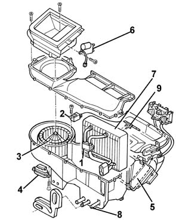
1, Expansion valve 2, electronic demister thermostat (*) 3, Fan motor 4, Fan motor resistance 5, Heater radiator 6, Recirculation flap actuator 7, Air conditioning evaporator unit 8, Condensation drainage pipe 9, Evaporator temperature sensor (*) present only on some cars at the beginning of production
Fan motor
The electric fan which sends the outside or recirculation air towards the duct/distributor receives a 12 V supply and is operated at different speeds by a nearby resistance.
Technical specifications
Nominal voltage 12V
Maximum current 28A
Speed in open air (at 12V, 25°C) 3270 - 3630 rpm
Fan motor resistance
A resistive divider operates the fan at different speeds: the device is protected from overheating by a special thermal fuse
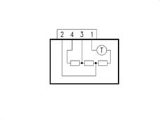
Technical specifications
1 speed (section 4-10) 2.61 Ohm
2 speed (section 3-1) 0.99 Ohm
3 speed section (2-1) 0.34 Ohm
4 speed --
Thermal fuse operating temperature 184°C
Heater radiator
The radiator is a heat exchanger connected to the engine cooling circuit by means of a pipe which takes hot water from the engine to heat the air which is sent to the passenger compartment
It consists of aluminium fins and pipes with a galvanized steel manifold.
Recirculation flap actuator
Rotation of the outside air inlet flap is controlled via the control unit by means of the recirculation actuator. This operates the flap in two extreme positions - 'dynamic air' and 'recirculation' without any intermediate positions.
A motor with a 12 V supply controls the rotary movement of a drive pin which acts directly on the flap:
Evaporator temperature electronic thermostat (demister) - present only on some cars at the beginning of production
This is an electronic thermostat, calibrated to operate when the temperature of the evaporator radiant unit is too low (risk of frost forming)
Technical specifications
Contact closing temperature 1.5 ± 0.5 °C
Contact reopening temperature 3.5 ± 0.5 °C
The frost thermostat is connected to the air conditioning compressor engagment control line, as illustrated in the diagram:
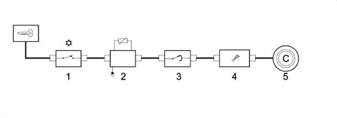
1, Control button 2, Frost thermostat (*) 3, Three stage pressure switch 4, Engine control unit 5, Compressor coupling (*) present only on some cars at the beginning of production
The above button enables the operation of the air cooling circuit; Does not automatically involve actual compressor activation This also depends on the intervention of:
- the demister thermostat (where present);
- the 3 stage pressure switch which stops the engagement of the air conditioning if the pressure of the coolant fluid is too low or too high;
- the engine control unit which, according to the engine management logic, excludes the operation of the compressor, for example in the case of high engine temperatures or in the case of high engine loads (sharp acceleration). For further detailsor.
The electric fan directs the flow of outside air (A) towards the interior of the vehicle.
If, on the other hand, the recirculation function is activated, the special flap directs the flow of air from the inside of the pasenger compartment (B).
The flow of air initally comes into contact with the evaporator, then it partly or totally envelopes the heater radiator, depending on the position of the mixture flap.
Lastly, the air is sent to the various vents depending on the position of the upper, centre and lower distribution flaps.
The outside air exclusion flap (recirculation) is operated by an electric motor, whilst the other flaps are operated mechanically through bowden cables.
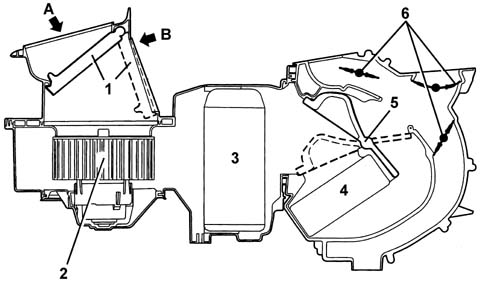
1, Outside air exclusion flap (recirculation) 2, Electric fan 3, Evaporator 4, Heater radiator 5, Mixture flap 6, Distribution flaps A, Outside air flow B, Inside air flow
Applies to: all engines; all production periods
CONSTRUCTION FEATURES
The system with thermostatic adjustment controls the climate control system semi-automatically.
In effect, it manages the following according to the temperature required in the passenger compartment:
- air temperature at outlets;
- speed of the fan (varies continuously);
The following functions, on the other hand, are operated manually:
- fixed speed of the fan (4 speeds);
- activation of the compressor (air refrigeration circuit);
- activation of air recirculation;
- 'MAX DEF' function.
Lastly, the management of the distribution of the air flows to the various vents is completely manual.
OPERATION
A special electronic control unit manages the automatic operation of the system controlling the thermodynamic parameters to provide the climate comfort desired by the occupants of the vehicle.
According to the requests received and the temperature conditions detected. The control unit sets several functions designed to adjust the passenger compartment temperature to the required level.
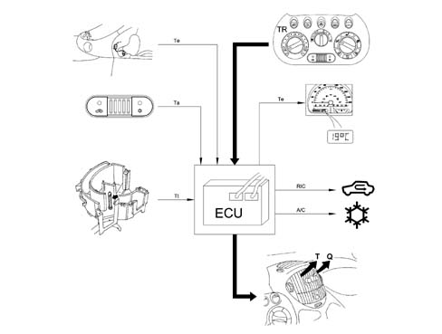
ECU, electronic control unit Te, outside temperature Ta, passenger compartment temperature Tt, Treated air temperature (at the vents) TR, required temperature RIC, recirculation function T, temperature of air sent to the passenger compartment Q, air flow rate sent to the passenger compartment A/C, activation of compressor (air refrigeration circuit)
CONTROLS
Three knobs and two buttons make it possible to control the system:
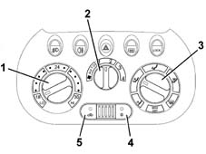
1, Air temperature knob 2, Fan speed knob 3, Distribution flow knob 4, Air conditioning engagement button 5, Recirculation button
The left knob is used for selecting the required temperature (between 18 and 30 °C): it is connected to a potentiometer which measures the variuos angular positions and thereby transmits a signal to the electronica control unit for a total of 15 different positions (one step per degree centigrade) with two extreme positions 'LO' and 'HI' which correspond to the maximum cold and maximum hot requests.
The centre knob is for adjusting the air ventilation: it is also connected to a potentiometer which measures the various angular positions and in this way transmits a signal to the electronic control unit. There are four possible air outputs which can be set manually (1, 2, 3, and 4), whilst in the 'AUTO' position the system itself automatically selects the most suitable output to reach or maintain the required temperature.
With the compressor switched off, the fan is always working at the first speed, even with the knob at '0'.
The right hand knob selects air distribution to the passenger compartment which can be achieved in five different ways: this selection takes place manually by means of a cable which controls the movement of the distribution flaps.
With the distribution knob turned completely in a clockwise direction, by means of a special microswitch, the 'MAX DEF' FUNCTION for rapid demisting involves:
- maximum air output;
- as much warm air as possible taken into the mixture;
- outside dynamic air (recirculation excluded) irrespective of the position of the button;
- compressor enabled, irrespective of the position of the button.
When pressed, the button with the recirculation symbol activates the recirculation of the air inside the passenger compartment; when released, 'dynamic' air flows in from the outside. When the button is pressed the LED comes on.
Activation is manual: the recirculation function is only excluded, even when the button is pressed, in the 'MAX DEF' mode (in this case the LED goes out automatically).
When the button with the refrigeration symbol is pressed this enables the operation of the air refrigeration circuit and when it is released the function is deactivated. When the button is pressed the LED comes on.
The compressor is always enabled in the 'MAX DEF' mode even with the button released (in this case the LED comes on automatically).
It should be remembered that the compressor can also be switched off by the intervention of the three stage pressure switch or by the engine management control unit.
This logic depends on the different engine management control units, as described in detail previously (see 5040A).
SYSTEM COMPONENTS
Electronic cotnrol unit
The electronic control unit manages the automatic operation of the system controlling the thermodynamic parameters to provide the climate comfort (temperature and humidity) desired by the occupants of the vehicle.
It is located on the duct-distributor assembly, easily accessible from the passenger compartment
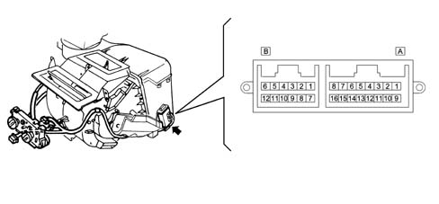
Connector A
PIN | SIGNAL |
|---|---|
1 | Fan control |
2 | Display in instrument panel |
3 | N.C. |
4 | Mixture actuator feed-back |
5 | N.C. |
6 | Outside temperature sensor |
7 | Passenger compartment temperature sensor |
8 | Earth |
9 | N.C. |
10 | Recirculation exclusion control - 5V |
11. | Recirculation engagement control - 5V |
12. | Supply controlled by the ignition |
13 | Compressor control |
14 | HI mixture control - 5V |
15 | LO mixture control - 5V |
16 | Earth for fan |
Connector B
PIN | SIGNAL |
|---|---|
Treated air temperature sensor | |
1 | Required temperature potentiometer |
2 | Ventilation potentiometer |
3 | Earth |
4 | Compressor engagement |
5 | MAX DEF |
6 | Earth for sensors |
7 | Direct supply from battery |
8 | Potentiometers supply - 5V |
9 | Diagnostic line L |
10 | Diagnostic line K |
11. | Recirculation activation |
Self-diagnosis
The control unit uses sensor monitoring and adjustment software with actuator self-adaption to record and store a series of anomalies and faults that could affect the system.
When the control unit encounters these anomalies it continues to manage the operation of the system replacing any incorrect values detected with suitable recovery values which guarantee the minimal, if not optimal, operation of the actual system.
Two types of errors are memorized:
- 'occasional' errors which are zeroed with the ignition switched OFF
- 'permanent' errors: if an error occurs more than 5 times in a given period then it is considered as permanent and is memorized in the control unit; these errors are NOT zeroed, even with the ignition switched OFF, but only after a specific external command (from the diagnostic equipment).
The control unit has two methods for reading the errors stored in its memory at its disposal:
- by means of the service diagnostic equipment.
- through the display in the panel where the outside temperature is indicated.
At the onset of an error detected by the control unit (even of the occasional type) the display shows the words 'ERROR 255' to indicate that the system has recorded a fault.
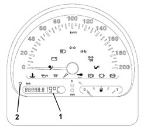
1, Outside temperature display 2, Switching button
If the appropriate button is pressed and the writing persists, this means that the error involves the outside temperature sensor; if, on the other hand, the correct temperature value appears, this means that the error involves other system components and the fault memorized can be identified through the following procedures:
- positioning itself in the following configuration: - temperature knob on 'HI' - distribution knob on 'MAX DEF' - fan knob on '0'
- turn the key from OFF to ON
- within 10 seconds, operate the fan knob as follows: '0' - 'AUTO' - '0' - 'AUTO' - '0'
At this point the control unit sends a series of messages to the panel: an error code, as set out in the table below, is displayed in place of '255'.
MALFUNCTIONS WHICH CAN BE DETECTED | CODE ON DISPLAY |
|---|---|
C.C. to earth of treated temperature sensor | 18 |
C.A. or C.C. for treated temperature sensor | 20 |
C.C. to earth of outside temperature sensor | 50 |
C.A. or C.C. for outside temperature sensor | 52 |
C.C. to earth of passenger compartment temperature sensor | 66 |
C.A. or C.C. for passenger compartment temperature sensor | 68 |
Mixture actuator malfunction | 101 |
C.C. to earth of required temperature potentiometer | 130 |
C.A. or C.C. for required temperature potentiometer | 132 |
C.C. to earth of ventilation potentiometer | 146 |
C.A. or C.C. of ventilation potentiometer | 148 |
C.C. to earth of mixture feedback | 178 |
C.A. or C.C. for mixture feedback | 180 |
C.C. to earth for 5V supply | 226 |
C.C. to battery + for 5V supply | 227 |
General | 255 |
If there are several errors, they can be displayed cyclically eveny 3 seconds.
When all the errors are over, the milometer is displayed again.
Outside temperature sensor
It is located on the left external rear view mirror.
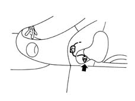
It is an NTC sensor (R at 25°C = 10 kOhm), with an operating range of -30°C to +50°C.
Treated air temperature sensor
It is located inside the distributor unit immediately upstream of the flaps for distributing the air to the various vents
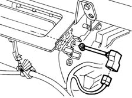
It is an NTC sensor (R at 25°C = 10 kOhm), with an operating range of 0°C to +80°C
Required temperature potentiometer
This potentiometer is connected to the temperature knob and measures the various angular positions, transmitting a signal to the electronic control unit for a total of 15 different positions (one step per degree centigrade) between the two extreme positions 'LO' and 'HI'.
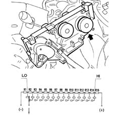
It receives a 5V supply from the control unit with the earth controlled and transmits a signal corresponding to the position of the knob.
Required flow rate potentiometer
This potentiometer is connected to the air ventilation knob and detects the various angular positions, sending a signal to the electronic control unit: there are four possible air outputs which are set manually (1, 2, 3 and 4), plus the 'AUTO' and '0' positions (fan symbol).
It receives a 5V supply from the control unit with the earth controlled and transmits a signal corresponding to the position of the knob.
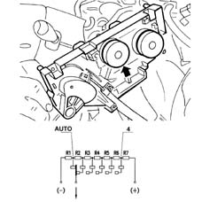
Passenger compartment temperature sensor
This is located on the climate control control panel between the recirculation and compressor control buttons
It is an NTC sensor (R at 25°C = 2.2 kOhm), with an operating range of +5°C to +45°C. The sensor is 'ventilated', i.e. it incorporates a small fan which is permanently on to ensure that the temperature reading is not affected by the still air trapped inside the facia.
These last three components constitute a single element which is connected to a single connector.
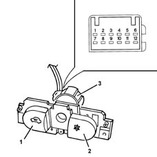
1, recirculation function switch 2, compressor enabling switch 3, passenger compartment temperature sensor
PIN OUT DEVICE:
PIN | SIGNAL |
|---|---|
1 | Ventilation sensor motor (+) |
2 | Ventilation sensor motor (-) |
3 | Earth for passenger compartment temperature sensor |
4 | Signal for passenger compartment temperature sensor |
5 | MAX-DEF |
6 | N.C. |
7 | Compressor control |
8 | Operating warning lights lighting |
9 | Supply controlled by the ignition |
10 | Ideogram lighting (+) |
11. | Ideogram lighting (-) |
12. | Recirculation control |
MAX DEF function microswitch
A special microswitch activates the MAX DEF function: it is located on the distribution knob: it is an N.A. contact which is closed with the knob fully rotated in a clockwise direction.
Mixture actuator
The temperature of the treated air is adjusted by the mixture actuator between hot and cold air which acts on the flap which either sends or does not send the flow of air entering the heater radiator through which hot water from the engine is flowing.
A motor with a 12 V supply controls the rotary movement of a drive pin which acts directly on the mixture flpa. A potentiometer detects the actual position and provides feedback to the control unit.
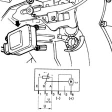
Total rotation angle between max. hot and max. cold = 62°
Ratio u/U for max. hot = 0.707
Ratio u/U for max. cold = 0.26
Recirculation actuator
The rotation of the outside air intake flap is ensured by the recirculation actuator which operates the flap by moving from the 'dynamic air' position to the 'recirculation' position. There are NO intermediate positions
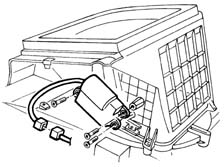
A motor with a 12 V supply controls the rotary movement of a drive pin which acts directly on the flap. Reversing the polarity produces movement in the opposite direction
Fan with speed governor
The electric fan which sends the outside or recirculation air towards the duct/distributor receives a 12 V supply and is continously operated at different speeds by a nearby resistance.
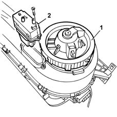
1, fan 2, electronic governor.
The electronic governor receives a control signal from the control unit and converts it to a continuously variable power signal in order to operate the fan.